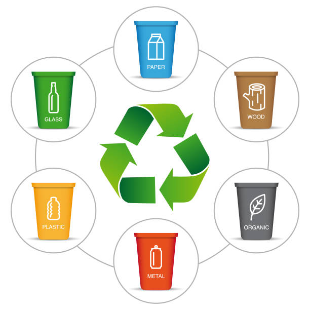

An Overview of Solid Waste Management from different sources. Population of City is 63 lacs plus and daily per capita waste generation is more than 600 gms.According to the 5 R's, four actions should be taken, if possible, prior to 'recycling': refuse, reduce, reuse, repurpose, and then recycle. Incorporating this methodology into your business' waste reduction and recycling efforts will minimize landfill waste and help take your recycling program to the next level.
Types of Waste Management
The seven most common types of garbage are:
1. Liquid or Solid Household Waste
This can be called ‘municipal waste’ or ‘black bag waste’ and is the type of general household rubbish we all have. It can be both liquid or solid.
Examples of Household Waste: Household waste can include kitchen scraps, packaging, cleaning waste, and liquids such as cooking fats, wastewater, cleaning liquids or grease.
2. Hazardous Waste
Hazardous waste is usually regulated by the federal government and includes some of the more dangerous chemicals that one can expect to find in a typical home. It may be inflammable, toxic, corrosive or reactive. This type of waste can create public health issues, which is why it needs to be handled and disposed of carefully.
Examples of Hazardous Waste: You can expect to find pharmaceuticals, anything that contains mercury, solvents, some paints, aerosol cans, pool chemicals, batteries, gasoline, fuel and more classified as hazardous waste.
3. Medical/Clinical Waste
Pharmaceutical waste like that produced by health care centres, clinics, hospitals, vets and specialist health clinics may also be found in the home, and should be disposed of responsibly, even if it is not marked hazardous. Medical waste may include both organic or inorganic materials, and needs to be disposed of responsibly.
Examples of Medical Waste: Medical waste can include bandages, needles, single-use medical devices, packaging, samples, and PPE such as gloves, gowns and masks.
4. Electrical Waste (E-Waste)
E-waste is generated from electrical devices of all shapes and sizes. These may contain toxic metals like lead, mercury, cadmium, and brominated flame retardants, which are all harmful to humans and the environment.
Examples of Electrical Waste: Electrical waste generally refers to a wide range of electrical devices including computers and computer parts, printers, DVD and music players, TVs, telephones, vacuum cleaners and so on.
5. Recyclable Waste
Recyclable waste refers to items and materials that can be converted into a reusable material. They are commonly found in household recycling bins. They require careful consideration in disposal to ensure waste is being reused and environmental impact is minimised.
Examples of Recyclable Waste: The most common types of recyclable household waste include paper, cardboard, beverage and food containers, metal and glass. Make sure you look for the recycling symbol before you dispose of any of these materials.
6. Construction & Demolition Debris
This is usually bulky and weighty material, generated during construction and renovation projects. Oftentimes it includes a wide array of materials, with renovations and construction projects requiring areas of the building, house or yard to be completely reworked. In older homes where asbestos or lead paint may be present, construction and demolition waste requires careful removal and disposal
Examples of Construction Waste: Construction waste may include materials such as ceiling tiles, bathroom tiles, plumbing fixtures, carpeting, insulation, timber frames, gyprock or plaster, concrete, bricks, skirting, rocks and fill dirt.
7. Green Waste
This is comprised of food and landscaping waste, which will break down naturally under the right conditions. For some, green waste can be disposed of using a composting system, but for others it needs to be taken to an appropriate disposal centre.
Examples of Green Waste: Green waste includes grass, weed clippings, tree limbs and branches, waste from vegetable produce, bread and grains, as well as paper products.
Disposing of Different Types of Household Rubbish
The 7 different types of rubbish vary in the level of care they require in the process of disposal. If you are looking to dispose of any of the types of rubbish outlined here but are unsure of where to start, contact the experts at Steve’s Rubbish Removals today!
These are the seven main types of rubbish that affect Brisbane homes. Industrial buildings also create industrial waste from glass, leather, textile, food, electronics, plastic and metal product manufacture. All of these may require the help of a professional rubbish removal service to dispose of responsibly and legally.
Small Steps with great success

Be the change you want to see
You can make small changes in your home which can lead to a big impact. Take a look at these simple ways in which waste can be efficiently managed at home.
1. Limit the use of plastic
The news often reports about animals that end up choking on plastic waste or marine life getting stuck in plastic under water. These are signs that we must try and reduce the use of plastic as much as possible in our daily life. Avoid buying plastic water bottles; instead, carry your own water bottle whenever you step out. Do away with plastic straws and drink directly from the glass. Use steel or glass cups instead of plastic ones and carry a cloth bag with you every time you go out shopping. You can even turn your old jeans or pieces of denim into bags.
2. Segregate the waste
Many countries do this and have managed to reduce wastes a great deal. We must emulate the best practices and form healthful habits, since waste management at home is the need of the hour. Segregate garbage into degradable and non-degradable waste. You can also create compost at home with leftover food, fruit and vegetable peels etc. Waste segregation not only makes the process of recycling much easier, but it will also help in maintaining a healthy and clean surrounding.
3. Reduce the use of paper
Yes, we understand that using no paper at all requires a very high level of commitment towards the environment. However, what you can do is use as little paper and paper products in your home as possible. You can use cloth rags instead of paper towels in the kitchen. Maintain soft copies of your journals, rather than using a notebook or a diary. Buy e-books instead of hard copies. Switch to using handkerchiefs and avoiding tissue papers to wipe your hands and face. Prefer metal or eco-friendly bamboo jute plates and cutlery instead of using paper plates when needed. Making such small changes in your choices can lead to a big change and enable house waste management.
4. Say yes to composting
Composting can reduce wastes by turning wet waste into fertilisers for plants. Besides, if you have or are planning to grow your own garden, you will have homemade, eco-friendly, chemical-free fertilisers to nourish your green babies.